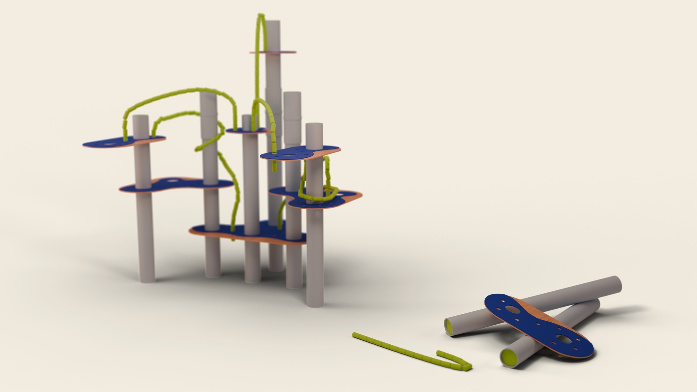

Sobre mí
Licenciado en Diseño (Universidad Torcuato Di Tella), con especializaciones en Innovación Estratégica y Desarrollos Digitales. Criado en Villa La Angostura, hoy vivo en Buenos Aires.
Me interesa el diseño como herramienta para resolver problemas concretos y para construir sentido; tomar una idea y encontrarle la forma, el relato, y el camino hasta que existe de verdad. No lo encasillo en un área: trabajo cómodo tanto con otros diseñadores como con gente de especialidades completamente distintas, porque ahí es cuando un proyecto más crece.
Estoy abierto a seguir ampliando mi rincón.
Aptitudes
- Desarrollo de sistemas e identidad visual
- Ilustración y dibujo
- Motion graphics
- Generación y edición de contenido audiovisual
- Diseño de interfaces web
- Diseño de objeto, producto y maquetización
- Modelado 3D
Herramientas
Diseño industrial / 3D
- Rhinoceros
- KeyShot
- Blender
Diseño gráfico y motion
- Illustrator
- Photoshop
- After Effects
- Premiere
- Figma
Desarrollo web
- HTML
- CSS
- JS
Audio
- Reaper
- Pro Tools
IA generativa
Integrada como una herramienta más, cruzada con los procesos tradicionales de diseño.
Contacto